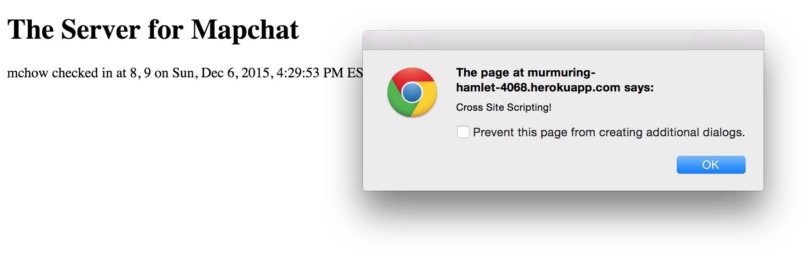

Security Assesment of Assignment 3 Mapchat Server
Created by: Steven Manwaring
December 8, 2015
Introduction
This page outlines the results of the security risk assessment I conducted on my partner's web application from Comp 20 Assignment 3. This application works as the server for the mapchat site that was created in Assignment 2. The application has a Post API which allows submition of specific data, and returns all documents form the Mongo database associated with the application. There is also a Get API that returns the latest data for a given login. However, this application contains some security vulnerabilities. On this page I will describe the various security issues I discovered in my partner's application and suggest ways in which these vulnerabilities might be avoided.
Methodology
I began my testing using the "black box" method. I used Postman and Tamper Data for this portion of the assignment. I then examined my partner's code to find additional areas where security risks might exist, and further targeted those areas specifically to discover if they contained vulnerabilities.
Abstract of Findings
Issues found
Cross Site Scripting
- Affects POST /sendLocation
- Severity: HIGH Anyone can submit javascript code as their "message" because user input is not sanitized. Furthermore, any malicious changes made to the page though cross site scripting are visible to all users of the application, and may adversly affect their usage of the website.
- I found this security vulnerability during the "black box" phase of my testing. Using Postman to post to the server, I sent a short script that sets an alert box to display anytime a user visits the application site. However, this does not seem to affect my partner's mapchap site.

- This vulnerability could be resolved by escaping certain characters in user input. Characters such as the 'greater that' and 'less than' symbols are especially important to deal with, as doing so would have prevent the attack I was able to conduct with relative ease.
Cross Origin Resource Sharing Wildcard ('*')
- Affects POST and GET API's
- Severity: MEDIUM This is an insecure method, in that it allows any user from any domain to make an XMLHttp Post Request and submit data to the database, provided they have an accurate login. Likewise, any user from any domain that happens to have an accurate login can use the get method to retrieve data. While the data in this particular application is not especially private, as good programming practice, cross origin resource sharing should really be limited to a specific domain. In this case, for both the get and post methods, cross origin resource sharing should be limited to the mapchat Github pages domain. This can be easily fixed by modifying the response headers to only accept data from a specific domain. I discovered this problem by examining my partner's code.
Conclusion